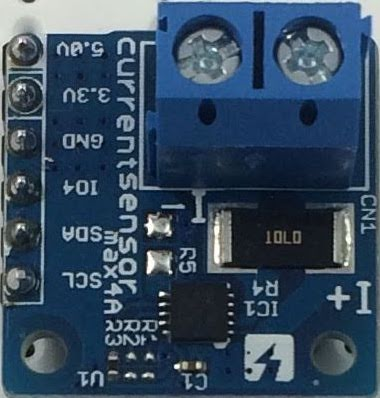

IoTデバイスをバッテリや太陽電池などで長期間動作させるためには、IoTデバイスを低消費電力化する必要があります。 「AmbientでIoTをはじめよう」の第25回は、M5StackでIoTデバイスの消費電流を測定する電流モニタを作り、ESPr Developer 32の消費電流を測ってみます。
IoTデバイスは、制御するマイコンの処理によって消費電流が変化します。 特にWi-FiやBluetoothなどの無線通信は、比較的大きな電流を消費しますし、いくつかのセンサは大きな電流を消費するものがあります。 従って、センサや通信モジュールにアクセスするプログラムによってIoTデバイスの消費電力は異なってきます。
IoTデバイスの低消費電力を知るには、ある瞬間の消費電流だけでなく、プログラム実行中の消費電流の積算値を調べる必要があります。 例えばそのデバイスが5分周期でデータを測定し、クラウドサービスに送信しているとしたら、5分間トータルの消費電流を把握し、改善する必要があります。 そのため、ある区間の総消費電流が測れる電流モニタを作ります。
電流センサモジュールとしては「Conta™ 電流センサ max4A PAC1710搭載」を使います。

この電流センサモジュールには、10mΩの抵抗（シャント抵抗）が搭載されています。バッテリと測定対象のデバイスの間にこのシャント抵抗を入れ、シャント抵抗の両端の電圧を測ることでバッテリからデバイスに流れる電流を測定します。シャント抵抗を流れる電流の測定にはPAC1710という電流センサが使われています。
PAC1710の電流測定には3つのパラメータがあります。一つは電流の測定範囲、もう一つは測定時間、3つ目は測定回数です。
測定範囲はシャント抵抗が10mΩの場合、±1A、±2A、±4A、±8Aの範囲が選択できます。今回はESP32など低消費電力のマイコンを測定対象にするので、±1Aのレンジで測定するように設定します。
測定時間は、測定にかける時間で、2.5ミリ秒から320ミリ秒まで設定できます。この測定時間は測定精度とトレードオフの関係にあります。測定範囲を±1Aにした場合、測定時間を2.5ミリ秒にすると15.6mAの精度で測定でき、20ミリ秒だと1.95mA、デフォルト設定の80ミリ秒だと0.49mAになります。マイコンの消費電流を測定する場合、細かい測定間隔で詳細な電流値を知りたいので、悩ましいトレードオフですが、今回は20ミリ秒、1.95mAの精度で測定することにします。
測定回数は、複数回測定して平均値を計算する機能で、1回（デフォルト）、2回、4回、8回が選択できます。今回はデフォルトの1回にします。
PAC1710はI2Cでマイコンと通信します。デフォルトのI2Cアドレスは0x18です。
M5StackとConta™ 電流センサモジュールはI2Cで通信するので、次のように接続します。モジュールにはプルアップ抵抗がついていないので、プログラムでプルアップします。
| M5Stack | Conta™ 電流センサモジュール |
|---|---|
| 3V3 | 3.3V |
| G | GND |
| SDA | SDA |
| SCL | SCL |
M5Stackに添付されているジャンパワイヤなどを使って接続します。
測定対象のバッテリとデバイスはConta™ 電流センサモジュールの端子台につなぎます。写真のように端子台を上に見たときに、電流が端子台の右から左に流れるようにつなぎます。この電流センサは逆方向の電流も測れるので、逆につないでもセンサが壊れることはありませんが、得られた値がプラスマイナス逆になってしまいます。
測定対象のバッテリとデバイスは、次の写真のようにバッテリのプラスを電流センサモジュールの右側の端子台につなぎ、左の端子台にデバイスをつなぎます。バッテリとデバイスのグランドは、電流センサのグランド（GND）につなぎます。
プログラム実行中の消費電流の積算値を測るために、10ミリ秒間隔で消費電流を測定し、1,000件のデータをメモリーに記録します。10ミリ秒間隔で1,000件なので、測定期間は10秒です。
周期的な処理は次のようにESP32 Arduinoのタイマー機能を使って実現します。 sampling ミリ秒ごとにタイマー割り込み処理関数 onTimer0 が呼び出されるようにします。周期処理では、 t0flag という変数を0にしてタイマー割り込みを待ち、割り込み処理関数で t0flag を1にすることで待ちを解除し、 sampling ミリ秒ごとに周期処理がおこなわれるようにします。
電流センサPAC1710にアクセスする部分はスイッチサイエンスのサンプルプログラムを利用しました。ただし、スイッチサイエンスのサンプルプログラムではI2Cでデータを読み込むときに、 requestFrom に第3パラメータとして false を渡し、リード後にI2Cバスを開放しないようにしていますが、これだとデータが読めなかったので、第3パラメータを渡さず、バスを開放するようにしました。
Wire.requestFrom(id, datasize, false); // リクエスト後にI2Cバスを開放しない
↓
Wire.requestFrom(id, datasize); // リクエスト後にI2Cバスを開放する
PAC1710は、電流の測定範囲をデフォルトの±8Aから±1Aに変更します。また測定時間をデフォルトの80ミリ秒から20ミリ秒に変更します。
void setup() {
// ...
// PAC1710の設定を変更する
int c1cnf[] = {0B00110000}; // Sample time: 20ms, Range: ±10mV
datasend(DEVID, PAC1710::REG::C1_VSAMP_CFG, c1cnf, 1);
}
電流値は、次のように dataread 関数で生データを読み出します。測定範囲を±1Aに設定したので、最大値が1A（1000mA）、分解能が2047なので、生データに (1000.0 / 2047) を掛けて電流値を計算しています。データシートでは、測定時間を20ミリ秒に設定したときの分解能は9ビット（511）なので、511で割るべきだと思うのですが、実際に得られた値からすると2047で割ると正しい電流値が得られるようです。
int ch1Vsense[2] = {0};
dataread(DEVID, PAC1710::REG::C1_SVRES_H, ch1Vsense, 2);
float amp = ( (int16_t(ch1Vsense[0] << 8 | (ch1Vsense[1])) >>4) * (1000.0 / 2047));
周期処理本体では、電流センサPAC1710から電流値と電圧値を読み、メモリに記録していきます。電流値のしきい値を決め、そのしきい値を超えたら測定対象のIoTデバイスが動き出したと判断して、記録を開始するようにしています。
測定が終わったら、測定データをCSVファイルにしてSDカードに書き出します。最後に測定データをM5StackのLCDに表示してプログラムを終了します。
今回のプログラムは10秒間電流値を測定して、測定結果をSDカードに書き出し、LCDに表示して終わりなので、 setup 関数ですべての処理をおこない、loop 関数の中身は空です。プログラム全体は次のようになります。
PAC1710のドライバを含むプログラム全体はGithubに公開しました。
https://github.com/AmbientDataInc/M5Stack_CurrentMonitor/tree/master/PAC1710
開発した電流モニタを使って、ESPr Developer 32の消費電流を測ってみました。
測定対象にしたのは、ESP32を搭載した開発ボードESPr Developer 32で、温湿度センサーSi7021をI2Cで接続し、バッテリで駆動しました。温度、湿度を測定してデーターをクラウドサービスAmbientに送信し、Deep sleepするプログラムを動かして評価しました。プログラムは次のような流れです。プログラム全体は最後に掲載します。
バッテリとESPr Developer 32の間に電流モニタをつなぎ、電流モニタのプログラムを動かしてから、バッテリをセットしてESPr Developer 32を動かすと、プログラムの最初からの電流の様子が測定できます。測定データはSDカードに書かれるので、それをパソコンで読み、Excelでグラフ化してみました。
測定結果からは次のようなことが分かります。
（もう一桁高い精度の電流センサで同様の測定をおこなったところ、ESPr Developer 32のDeep sleep時の消費電流は0.5mA程度でした。）
今回開発した電流モニタは1.95mAの精度なので、あまり詳細な測定にはなっていませんが、大まかな消費電流の傾向は把握できます。特に、Deep sleep機能を使ってIoTデバイスを間欠動作させることで、消費電流を下げられていることが具体的に確認できます。また、Wi-Fiアクセスポイントへの接続に大きな電流を消費していることも分かります。さらに消費電流を下げるためには、毎回Wi-Fi APに接続せず、通常はセンサデータを取得してメモリに保存してすぐにDeep sleepし、何回かに1回、まとめてデータをクラウドサービスに送信するといった工夫が有効です。
測定対象のプログラムは次のようなものです。
M5Stackと電流センサモジュールを使って、IoTデバイスの消費電流を測定する電流モニタを作りました。精度には課題がありますが、IoTデバイスの大まかな消費電流の傾向がつかめます。簡単な部品で作れるので、皆さんもご自分で作ったIoTデバイスの消費電流を見てみてはいかがでしょうか？